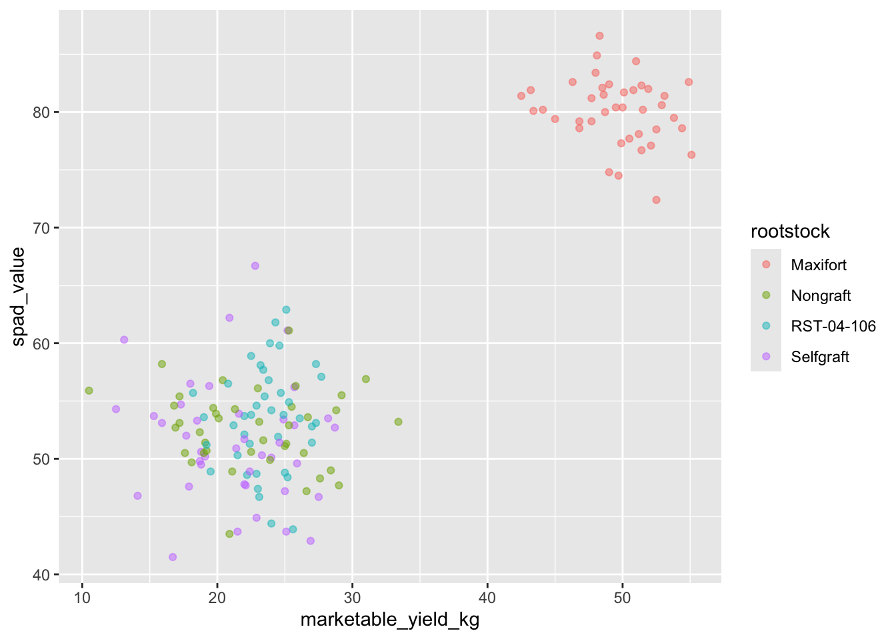
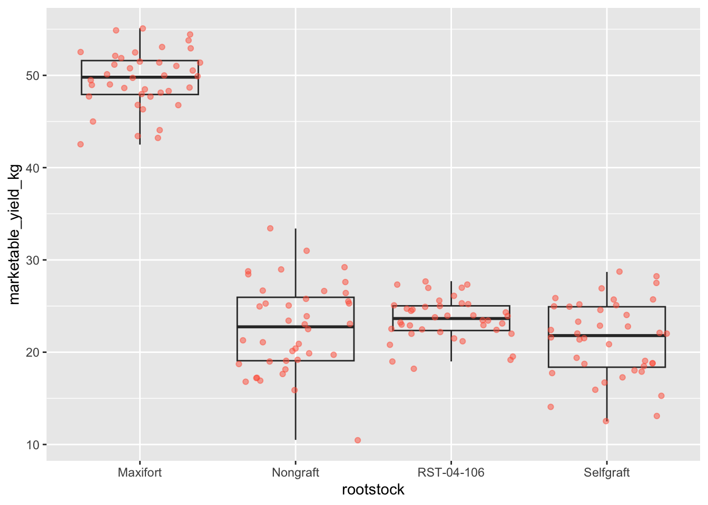
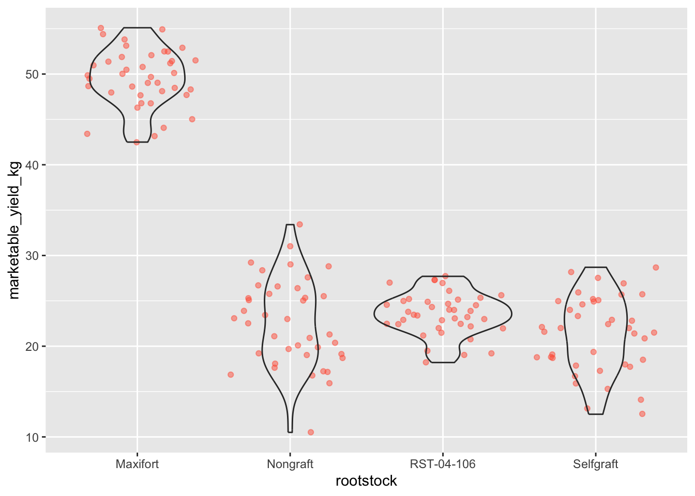
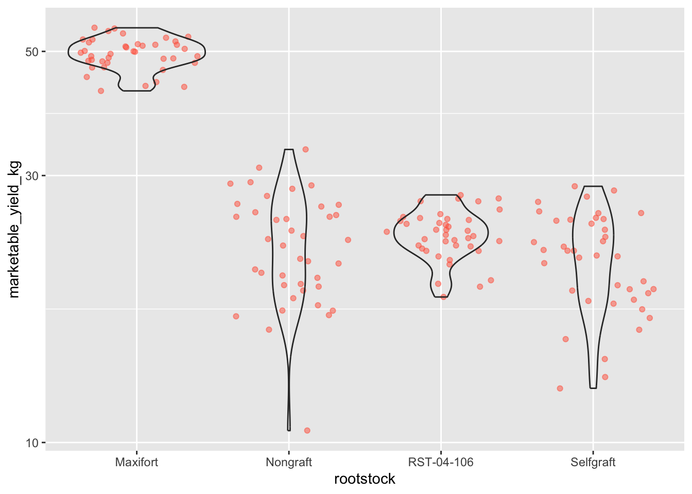
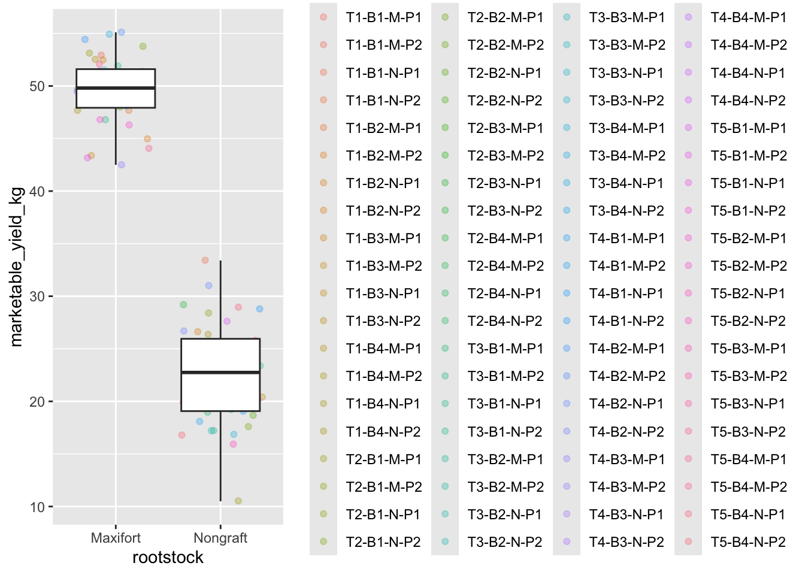

Data visualization with ggplot2
Learning Objectives
- Produce scatter plots, boxplots, and time series plots using ggplot.
- Describe what faceting is and apply faceting in ggplot.
- Set universal plot settings.
We start by loading the required packages.
ggplot2 is included in the
tidyverse package.
library(tidyverse)Let’s read in our tomato yiled data for learning various plots in R. We will use the data maniputation techniques, that we have learned before, and use it for visulization as well.
Plotting with ggplot2
ggplot2 is a plotting package that
makes it simple to create complex plots from data in a data frame. It
provides a more programmatic interface for specifying what variables to
plot, how they are displayed, and general visual properties. Therefore,
we only need minimal changes if the underlying data change or if we
decide to change from a bar plot to a scatterplot. This helps in
creating publication quality plots with minimal amounts of adjustments
and tweaking.
ggplot2 functions like data in the
‘long’ format, i.e., a column for every dimension, and a row for every
observation. Well-structured data will save you lots of time when making
figures with ggplot2
ggplot graphics are built step by step by adding new elements. Adding layers in this fashion allows for extensive flexibility and customization of plots.
To build a ggplot, we will use the following basic template that can be used for different types of plots:
ggplot(data = <DATA>, mapping = aes(<MAPPINGS>)) + <GEOM_FUNCTION>()- use the
ggplot()function and bind the plot to a specific data frame using thedataargument
ggplot(data = yield_with_meata_df)- define a mapping (using the aesthetic (
aes) function), by selecting the variables to be plotted and specifying how to present them in the graph, e.g. as x/y positions or characteristics such as size, shape, color, etc.
ggplot(data = yield_with_meata_df, mapping = aes(x = marketable_yield_kg, y = spad_value))add ‘geoms’ – graphical representations of the data in the plot (points, lines, bars).
ggplot2offers many different geoms; we will use some common ones today, including:* `geom_point()` for scatter plots, dot plots, etc. * `geom_boxplot()` for, well, boxplots! * `geom_line()` for trend lines, time series, etc.
To add a geom to the plot use the + operator. Because we
have two continuous variables, let’s use geom_point()
first:
ggplot(data = yield_with_meata_df, mapping = aes(x = marketable_yield_kg, y = spad_value)) +
geom_point()The + in the ggplot2
package is particularly useful because it allows you to modify existing
ggplot objects. This means you can easily set up plot
templates and conveniently explore different types of plots, so the
above plot can also be generated with code like this:
# Assign plot to a variable
gg_spad_yield <- ggplot(data = yield_with_meata_df, mapping = aes(x = marketable_yield_kg, y = spad_value))
# Draw the plot
gg_spad_yield +
geom_point()Notes
- Anything you put in the
ggplot()function can be seen by any geom layers that you add (i.e., these are universal plot settings). This includes the x- and y-axis mapping you set up inaes(). - You can also specify mappings for a given geom independently of the
mappings defined globally in the
ggplot()function. - The
+sign used to add new layers must be placed at the end of the line containing the previous layer. If, instead, the+sign is added at the beginning of the line containing the new layer,ggplot2will not add the new layer and will return an error message.
# This is the correct syntax for adding layers
gg_spad_yield +
geom_point()
# This will not add the new layer and will return an error message
gg_spad_yield
+ geom_point()Building your plots iteratively
Building plots with ggplot2 is
typically an iterative process. We start by defining the dataset we’ll
use, lay out the axes, and choose a geom:
ggplot(data = yield_with_meata_df, mapping = aes(x = marketable_yield_kg, y = spad_value))+
geom_point()
Then, we start modifying this plot to extract more information from
it. For instance, we can add transparency (alpha) to avoid
overplotting:
ggplot(data = yield_with_meata_df, mapping = aes(x = marketable_yield_kg, y = spad_value))+
geom_point(alpha = 0.1)We can also add colors for all the points:
ggplot(data = yield_with_meata_df, mapping = aes(x = marketable_yield_kg, y = spad_value))+
geom_point(alpha = 0.5, color = "blue")Or to color each species in the plot differently, you could use a
vector as an input to the argument color.
ggplot2 will provide a different color
corresponding to different values in the vector. Here is an example
where we color with species_id:
ggplot(data = yield_with_meata_df, mapping = aes(x = marketable_yield_kg, y = spad_value))+
geom_point(alpha = 0.5, aes(color = rootstock))
We can also specify the colors directly inside the mapping provided
in the ggplot() function. This will be seen by all geom
layers and the mapping will be determined by the x- and y-axis set up in
aes().
ggplot(data = yield_with_meata_df, mapping = aes(x = marketable_yield_kg, y = spad_value, color = rootstock))+
geom_point(alpha = 0.5)
Notice that we can change the geom layer and colors will be still
determined by rootstock
Challenge
Use ggplot() to create a scatter plot of
marketable_yield_kg and rootstock with
marketable_yield_kg on the Y-axis, and rootstock on the X-axis. Have the
colors be coded by rootstock. Is this a good way to show
this type of data? What might be a better graph?
ANSWER
ggplot(data = yield_with_meata_df, mapping = aes(x = rootstock, y = marketable_yield_kg, color = rootstock))+
geom_point(alpha = 0.5)Boxplot
We can use boxplots to visualize the distribution of weight within each species:
ggplot(data = yield_with_meata_df, mapping = aes(x = rootstock, y = marketable_yield_kg, color = rootstock))+
geom_boxplot()By adding points to boxplot, we can have a better idea of the number of measurements and of their distribution.
Let’s also use the geometry “jitter”. geom_jitter is
almost like geom_point but it allows you to visualize how
the density of points because it adds a small amount of random variation
to the location of each point.
ggplot(data = yield_with_meata_df, mapping = aes(x = rootstock, y = marketable_yield_kg))+
geom_boxplot(alpha = 0) +
geom_jitter(alpha = 0.5, color = "tomato") #notice our color needs to be in quotations 
Notice how the boxplot layer is behind the jitter layer? What do you need to change in the code to put the boxplot in front of the points such that it’s not hidden?
Challenges
- Boxplots are useful summaries, but hide the shape of the distribution. For example, if the distribution is bimodal, we would not see it in a boxplot. An alternative to the boxplot is the violin plot, where the shape (of the density of points) is drawn.
- Replace the box plot code from above with a violin plot; see
geom_violin().
- In many types of data, it is important to consider the scale of the observations. For example, it may be worth changing the scale of the axis to better distribute the observations in the space of the plot. Changing the scale of the axes is done similarly to adding/modifying other components (i.e., by incrementally adding commands). Try making these modifications:
- Use the violin plot you made in Q1 and adjust the weight to be on
the log10 scale; see
scale_y_log10().
- Make a new plot to explore the distribution of
marketable_yield_kgjust for rootstocks Nongraft and Maxifort usinggeom_boxplot(). Overlay a jitter/scatter plot of the marketable_yield_kg of the two rootstocks behind the boxplots. Then, add anaes()argument to color the datapoints (but not the boxplots) according to the plantID from which the sample was taken.
ANSWER
#1
ggplot(data = yield_with_meata_df, mapping = aes(x = rootstock, y = marketable_yield_kg))+
geom_jitter(alpha = 0.5, color = "tomato") +
geom_violin(alpha = 0)
# 2
ggplot(data = yield_with_meata_df, mapping = aes(x = rootstock, y = marketable_yield_kg))+
geom_jitter(alpha = 0.5, color = "tomato") +
geom_violin(alpha = 0) +
scale_y_log10()
#3
yield_with_meata_df %>%
filter(rootstock=="Nongraft" | rootstock=="Maxifort") %>%
ggplot(mapping = aes(x = rootstock, y = marketable_yield_kg))+
geom_jitter(alpha = 0.3, aes(color = plantID)) +
geom_boxplot()
Faceting
ggplot2 has a special technique called
faceting that allows the user to split one plot into multiple
plots based on a factor included in the dataset. We will use it to make
a time series plot for each species:
yield_with_meata_df %>%
ggplot(data = yield_with_meata_df, mapping = aes(x = rootstock, y = marketable_yield_kg, color = rootstock)) +
geom_jitter(alpha = 0.3) +
geom_boxplot()+
facet_wrap(~ sampling_date)ggplot2 themes
ggplot Themes are a great, easy addition that can make all your plots more readable (and a lot more pretty!)
In addition to theme_bw(), which changes the plot
background to white, ggplot2 comes with
several other themes which can be useful to quickly change the look of
your visualization. The complete list of themes is available at http://docs.ggplot2.org/current/ggtheme.html.
theme_minimal() and theme_light() are popular,
and theme_void() can be useful as a starting point to
create a new hand-crafted theme.
Usually plots with white background look more readable when printed.
We can set the background to white using the function
theme_bw(). Additionally, you can remove the grid:
yield_with_meata_df %>%
ggplot(data = yield_with_meata_df, mapping = aes(x = rootstock, y = marketable_yield_kg, color = rootstock)) +
geom_jitter(alpha = 0.3) +
geom_boxplot()+
facet_wrap(~ sampling_date)+
theme_bw() +
theme(panel.grid = element_blank())
Challenge 1
How to make high quality plot for the publication? We want to show the plot of marketable_yield_kg yield, by two sampling date. Here, we want to play with various factors of ggplot and themes.
ANSWER
# change the date so that they are in the same foramt
yield_with_meta_date_fix_df <- yield_with_meata_df %>%
mutate(date_column = ifelse(sampling_date=="july-15-2018", "07/15/2018","06/15/2018"))
##
yield_with_meta_date_fix_df %>%
ggplot(mapping = aes(x = rootstock, y = marketable_yield_kg)) +
geom_jitter(alpha = 0.5) +
geom_boxplot()+
facet_wrap(~ date_column)+
theme_classic() +
theme(panel.grid = element_blank())
###
## change the order of the rootstocsk. We want Nongraft, Selfgraft, RST-04-106, and Maxifort
yield_with_meta_date_fix_df$rootstock <- factor(yield_with_meta_date_fix_df$rootstock, levels = c("Nongraft", "Selfgraft","RST-04-106", "Maxifort"))
yield_with_meta_date_fix_df %>%
ggplot(mapping = aes(x = rootstock, y = marketable_yield_kg)) +
geom_jitter(alpha = 0.5) +
geom_boxplot()+
facet_wrap(~ date_column)+
theme_classic() +
theme(panel.grid = element_blank())
## Chnage the Y axis and X axis label
yield_with_meta_date_fix_df %>%
ggplot(mapping = aes(x = rootstock, y = marketable_yield_kg)) +
geom_jitter(alpha = 0.5) +
geom_boxplot()+
facet_wrap(~ date_column)+
labs(x="Rootstocks", y="Marketable Yield (Kg)")+
theme_classic() +
theme(panel.grid = element_blank())
## line thinkness
yield_with_meta_date_fix_df %>%
ggplot(mapping = aes(x = rootstock, y = marketable_yield_kg)) +
geom_jitter(alpha = 0.5) +
geom_boxplot()+
facet_wrap(~ date_column)+
labs(x="Rootstocks", y="Marketable Yield (Kg)")+
theme_classic() +
theme(panel.grid = element_blank(),
axis.line = element_line(linewidth = 1))
##
gg_marketable_yiled_by_rootstocks_sdate <- yield_with_meta_date_fix_df %>%
ggplot(mapping = aes(x = rootstock, y = marketable_yield_kg)) +
geom_jitter(alpha = 0.8) +
geom_boxplot()+
facet_wrap(~ date_column)+
labs(x="Rootstocks", y="Marketable Yield (Kg)")+
theme_classic() +
theme(panel.grid = element_blank(),
axis.line = element_line(linewidth = 1),
axis.title = element_text(size = 20, face = "bold"),
axis.text.x = element_text(size = 14, angle = 45, vjust = 1, hjust = 1),
axis.text.y = element_text(size = 14))+
theme(panel.grid.major = element_blank(),
panel.grid.minor = element_blank(),
strip.background = element_blank(),
panel.border = element_blank(),
strip.text = element_text(size = 20))
gg_marketable_yiled_by_rootstocks_sdate
## save the plot in pdf
ggsave("output/figures/gg_marketable_yiled_by_rootstocks_sdate.pdf", gg_marketable_yiled_by_rootstocks_sdate, height = 5, width = 5 )Challenge 2
Use what you just learned to create a plot that depicts how the average weight of each species changes through the years.
ANSWER
#create a new dataframe
average_market_yiled_by_rootstocsk <- yield_with_meta_date_fix_df %>%
group_by(rootstock) %>%
summarize(avg_weight = mean(marketable_yield_kg))
ggplot(data = average_market_yiled_by_rootstocsk, mapping = aes(x=rootstock, y=avg_weight)) +
geom_col() +
labs(x="Rootstocks", y="Marketable Yield (Mean)", title = "this is a barplot")+
theme_classic()